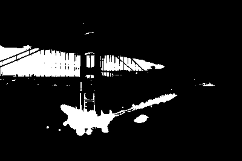
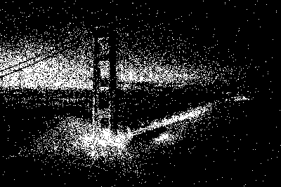
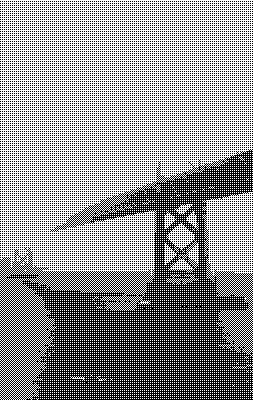
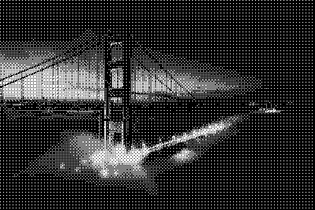
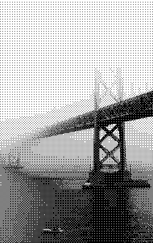
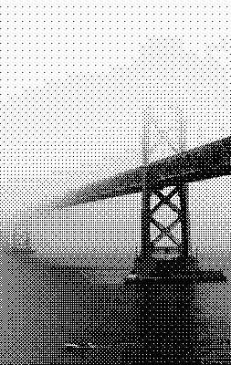
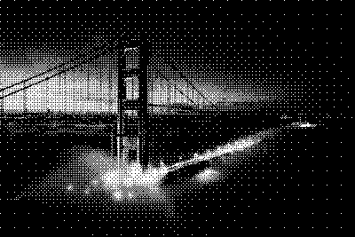
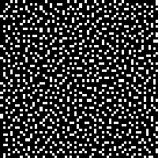
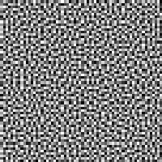

April 9, 2021
A while ago, I read Surma’s excellent article on dithering. Immediately, it sparked my interest in the game Return of the Obra Dinn, which I’ve since enjoyed immensely. I also thought it would be fun to try to implement some of the dithering algorithms he’s describing in Futhark, but I never really got around to it. Until now!
I’ll mainly be focusing on the blue noise filter, as that seemed like the most interesting one, but I’ll also be implementing the Bayer filter and perhaps a few others. I’ll skip most of the details about how dithering works and what the purpose is, and instead direct you to the article linked above. The purpose of this post is to illustrate how we can implement the algorithms described using Futhark.
By the way, this blog post was written using futhark literate so you can inspect the entire source code at your leisure.
With all that out of the way, let’s dive in.
We’ll be using the same images as in Surma’s blog post:
Loading images into futhark literate returns pixels in ARGB format in the form of [][]u32. We’re only interested in greyscale images, so let’s write a few functions to convert an ARGB image into greyscale. We’ll use f32 values between 0 and 1 to represent greyscale, with 0 being black and 1 being white. We also immediately perform some gamma-correction, so we can meaningfully work with greyscale images from now on.
let unpack_rgb (pixel: u32): (u8, u8, u8) =
(u8.u32 pixel,
u8.u32 (pixel >> 8),
u8.u32 (pixel >> 16))
let brightness (pixel: u32): f32 =
let (r, g, b) = unpack_rgb pixel
-- We could use just one of the channels, but this should give us the same
-- result when the input images are already greyscale.
in (f32.u8 r + f32.u8 g + f32.u8 b) / (255.0 * 3)This gamma-correction formula is from Wikipedia
let to_linear (b: f32): f32 =
if b <= 0.04045 then
b / 12.92
else
((b + 0.055) / 1.055) ** 2.4
let greyscale [n][m] (img: [n][m]u32): [n][m]f32 =
map (map (to_linear <-< brightness)) imgNow we can try to apply the simple quantization method of checking if each pixel is below or above 0.5 in order to determine if it should be black or white:
let quantize [n][m] (img: [n][m]f32): [n][m]bool =
map (map (> 0.5)) img> :img quantize (greyscale ($loadimg "dark-original.png"))
> :img quantize (greyscale ($loadimg "light-original.png"))Note that I use booleans to represent pure black-and-white pixels: true is white and false is black.
As stated in the original article, this method is pretty unsatisfying. We can barely see what’s depicted.
Let’s try with random noise instead.
import "lib/github.com/diku-dk/cpprandom/random"
module d = uniform_real_distribution f32 minstd_rand
let quantize_random [n][m] (seed: i32) (img: [n][m]f32): [n][m]bool =
-- Create a rng per pixel
let rngs = minstd_rand.rng_from_seed [seed]
|> minstd_rand.split_rng n
|> map (minstd_rand.split_rng m)
-- For each pixel apply the randomness factor and quantize
in map2 (map2 (\rng pixel ->
let (_, x) = d.rand (0, 1) rng
in pixel > x))
rngs img> :img quantize_random 123i32 (greyscale ($loadimg "dark-original.png"))
> :img quantize_random 123i32 (greyscale ($loadimg "light-original.png"))What we’re really doing when we’re quantizing, is to compare each pixel in the original image to a mask. We’ve seen two cases, one where we compare to a mask where all the values are 0.5, and one where the mask is randomly generated, but many other masks exist. We can also imagine that it might not be necessary for the mask to have the same size as the input image, if we can just tile the original image with the mask image.
This generalized process is called dithering, so let’s write a function to apply a dither mask to an image:
let dither [n][m][n'][m'] (img: [n][m]f32) (mask: [n'][m']f32): [n][m]bool =
let helper i j pixel = pixel > mask[i % n', j % m']
in map2 (\i -> map2 (helper i) (iota m))
(iota n) imgNow let’s look at some masks. The first one is the Bayer mask, which uses Bayer matrices.
First, we need a helper function: concat_m takes four equal-sized matrices and arranges them in a square matrix.
let concat_m [n] 't (xss1: [n][n]t) (xss2: [n][n]t) (xss3: [n][n]t) (xss4: [n][n]t): [][]t =
let n2 = n * 2
in concat (transpose (concat_to n2 (transpose xss1) (transpose xss2)))
(transpose (concat_to n2 (transpose xss3) (transpose xss4)))bayer computes the Bayer matrix of rank n.
let bayer (n: i64): [][]i32 =
let helper i = map (map (\x -> 4 * x + i))
let bayer = [[0, 2], [3, 1]]
in if n == 0 then bayer
else
loop bayer for _ in 1 ... n do
concat_m (helper 0 bayer)
(helper 2 bayer)
(helper 3 bayer)
(helper 1 bayer)Note that we should perhaps use the by bit-arithmetic method instead, or at least figure out which one is faster: https://en.wikipedia.org/wiki/Ordered_dithering
We’ll also need to be able to normalize Bayer filters (and later bluenoise filters). For that we’ll introduce normalize_i32:
let normalize_i32 [n][m] (xss: [n][m]i32): [n][m]f32 =
let maximum = i32.maximum (map i32.maximum xss)
in map (map (\x -> f32.i32 x / f32.i32 maximum)) xssLet’s see some results. First we create the first four bayer matrices, to see the effect of larger matrices on the dither result:
let bayer0 = normalize_i32 (bayer 0)
let bayer1 = normalize_i32 (bayer 1)
let bayer2 = normalize_i32 (bayer 2)
let bayer3 = normalize_i32 (bayer 3)And now let’s see what we get.
> :img dither (greyscale ($loadimg "dark-original.png")) bayer0> :img dither (greyscale ($loadimg "light-original.png")) bayer0
> :img dither (greyscale ($loadimg "dark-original.png")) bayer1
> :img dither (greyscale ($loadimg "light-original.png")) bayer1
> :img dither (greyscale ($loadimg "dark-original.png")) bayer2> :img dither (greyscale ($loadimg "light-original.png")) bayer2
> :img dither (greyscale ($loadimg "dark-original.png")) bayer3
> :img dither (greyscale ($loadimg "light-original.png")) bayer3I think that looks pretty good!
Let’s move on to blue noise filters, which is another way of generating masks for dithering. It’s based on the void-and-cluster method as originally described by Robert Ulichney.
The algorithm has takes a random binary pattern as input, processes that into a initial binary pattern and then uses that initial binary pattern to generate the final mask through three phases.
First, we need to be able to generate the input pattern, which is just a randomly generated binary pattern, where less than half the values are white:
module dist = uniform_int_distribution i64 minstd_rand
let rand_binary_pattern (seed: i32) (n: i64) (m: i64): [n][m]bool =
let rng = minstd_rand.rng_from_seed [seed]
-- Generate an n*m matrix with just `false` values
let xss = replicate n (replicate m false)
-- Generate a minority number of indices and set them to `true`.
let rngs = minstd_rand.split_rng (n * m / 4) rng
let (idxs, vals) =
map (\rng ->
let (rng, y) = dist.rand (0, n) rng
let (_, x) = dist.rand (0, m) rng
in ((y, x), true))
rngs
|> unzip
in scatter_2d xss idxs valsThe algorithm depends on being able to find the tightest cluster and largest void of a given image. To find the tightest cluster, we apply a gaussian blur to the image and find the brightest pixel in the result. To find the largest void, we do the same but try to find the darkest pixel in the result.
We therefore need to be able to compute a gaussian kernel that we can use to blur with. We use the gaussian function that Surma also uses, which is a slightly modified version of the one suggested by Ulichney.
let gaussian_kernel (n: i64): [n][n]f32 =
let sigma: f32 = 1.5
let factor = 1 / (2 * f32.pi * sigma ** 2)
let gaussian x y = factor * f32.e ** (- (f32.i64 (x - n / 2) ** 2 +
f32.i64 (y - n / 2) ** 2) /
(2 * sigma ** 2))
in tabulate_2d n n gaussianNow we can implement the blur_naive function:
let blur_naive [n] (kernel: [n][n]f32) (inp: [n][n]bool) =
let halfn = n / 2
let blur_pixel (py: i64) (px: i64): f32 =
map2 (\qy ->
map2 (\qx g ->
let x = (px + qx - halfn) % n
let y = (py + qy - halfn) % n
in f32.bool inp[y, x] * g)
(iota n))
(iota n)
kernel
|> flatten
|> f32.sum
in tabulate_2d n n blur_pixelHaving implemented our blur function, we can now implement the tightest_cluster and largest_void functions. Really, they are quite similar, and we could certainly abstract them out into one function, but keeping them separate makes it more clear what they do.
let tightest_cluster [n] (blur: [n][n]bool -> [n][n]f32) (inp: [n][n]bool): (i64, i64) =
-- Blur the input image
blur inp
-- Return also the indices for each pixel and its boolean value.
|> map3 zip3 (tabulate_2d n n (\i j -> (i, j))) inp
-- Flatten the matrix so we are working on a single-dimensional array.
-- Find the highest-valued pixel, considering only pixels that are `true` in
-- the original input.
|> flatten
|> reduce_comm (\(idx, x, v) (idx', x', v') ->
if v > v' || !x'
then (idx, x, v)
else (idx', x', v'))
((-1, -1), false, f32.lowest)
|> (.0)
let largest_void [n] (blur: [n][n]bool -> [n][n]f32) (inp: [n][n]bool): (i64, i64) =
blur inp
|> map3 zip3 (tabulate_2d n n (\i j -> (i, j))) inp
|> flatten
|> reduce_comm (\(idx, x, v) (idx', x', v') ->
if v < v' || x'
then (idx, x, v)
else (idx', x', v'))
((-1, -1), true, f32.highest)
|> (.0)With these building blocks in place, let’s implement initial_binary_pattern. ip is the input pattern, and the result is the initial binary pattern.
let initial_binary_pattern [n] (blur: [n][n]bool -> [n][n]f32) (ip: *[n][n]bool): *[n][n]bool =
let (_, _, res) =
-- Initialize the two indices with invalid but different values
loop ((i, j), (i', j'), ip) = ((-2, -2), (-1, -1), ip)
-- While the the two indices are different
while (i, j) != (i', j') do
-- Compute the location of the tightest cluster
let (i, j) = tightest_cluster blur ip
-- Set that location to false
let ip[i, j] = false
-- Compute the location of the largest void
let (i', j') = largest_void blur ip
-- Set that location to true
let ip[i', j'] = true
-- Repeat
in ((i, j), (i', j'), ip)
in resFinally, in order to visualize the smallish patterns, let’s write some functions to scale them up to arbitrary pixels sizes:
let scale [n][m] 't (n2: i64) (m2: i64) (img: [n][m]t): *[n2][m2]t =
let y_scale = f32.i64 n2 / f32.i64 n
let x_scale = f32.i64 m2 / f32.i64 m
in tabulate_2d n2 m2 (\i j -> img[i64.f32 <| f32.i64 i / y_scale,
i64.f32 <| f32.i64 j / x_scale])
let scale_f32: (i64 -> i64 -> [][]f32 -> *[][]f32) = scale
let scale_bool: (i64 -> i64 -> [][]bool -> *[][]bool) = scaleWith all that in hand, let’s take a look at what a generated initial binary pattern could look like:
let ker_64 = gaussian_kernel 64
let ibp = initial_binary_pattern (blur_naive ker_64) (rand_binary_pattern 123 64 64)> :img scale_bool 200i64 200i64 ibp
That looks pretty good, I think! So now, let’s go about turning it into a blue noise pattern. The bluenoise function is a pretty straight-forward implementation of the algorithm as described in Ulichneys original paper:
let bluenoise [n] (blur: [n][n]bool -> [n][n]f32) (ibp: [n][n]bool) : [n][n]i32 =
-- Load the binary pattern with the initial binary pattern
let bp = copy ibp
-- ones is the number of `true` values in the binary pattern
let ones =
flatten ibp
|> map i32.bool
|> i32.sum
let rank = ones - 1
-- `dit` is the result dither array we'll input values into.
let dit = replicate n (replicate n 0i32)
-- Phase 1
let (dit, _, _) =
loop (dit, bp, rank)
while rank >= 0 do
let (i, j) = tightest_cluster blur bp
let bp[i, j] = false
let dit[i, j] = rank
in (dit, bp, rank - 1)
let bp = copy ibp
let rank = ones
-- Phase 2
let (dit, bp, rank) =
loop (dit, bp, rank)
while rank < i32.i64 (n * n / 2) do
let (i, j) = largest_void blur bp
let bp[i, j] = true
let dit[i, j] = rank
in (dit, bp, rank + 1)
-- Invert the binary pattern, such that `false` are now the minority pixels
let bp = map (map (!)) bp
-- Phase 3
let (dit, _, _) =
loop (dit, bp, rank)
while rank < i32.i64 (n * n) do
let (i, j) = tightest_cluster blur bp
let bp[i, j] = false
let dit[i, j] = rank
in (dit, bp, rank + 1)
in ditLet’s take a look:
let bluenoise_mask = normalize_i32 (bluenoise (blur_naive ker_64) ibp)> :img scale_f32 200i64 200i64 bluenoise_mask
Looks pretty random to me. Let’s try to apply it to our images:
> :img dither (greyscale ($loadimg "dark-original.png")) bluenoise_mask> :img dither (greyscale ($loadimg "light-original.png")) bluenoise_maskThe naive blue noise implementation is pretty slow, even in Futhark. Let’s try to see if we can speed it up, by applying the gaussian in the frequency space.
First, we need the fft library, and the complex library for convenience:
import "lib/github.com/diku-dk/fft/stockham-radix-2"
import "lib/github.com/diku-dk/complex/complex"
module fft32 = mk_fft f32
module c32 = mk_complex f32We also need to be able to center an the frequency-space image
let center_fft [n] 't (img: [n][n]t): [n][n]t =
map (rotate (n / 2)) img
|> rotate (n / 2)To blur, we transform both the kernel and the input image to the frequency space and multiply them together
let blur_fft [n] (kernel: [n][n]f32) (inp: [n][n]bool): [n][n]f32 =
let kernel' = kernel
|> fft32.fft2_re
|> center_fft
let inp' = map (map f32.bool) inp
|> fft32.fft2_re
|> center_fft
in map2 (map2 (c32.*)) kernel' inp'
|> center_fft
|> fft32.ifft2
|> center_fft
|> map (map c32.mag)
let bluenoise_mask_fft = normalize_i32 (bluenoise (blur_fft ker_64) ibp)> :img scale_f32 200i64 200i64 bluenoise_mask_fft
Looks good. Let’s try to apply it to our images:
> :img dither (greyscale ($loadimg "dark-original.png")) bluenoise_mask_fft> :img dither (greyscale ($loadimg "light-original.png")) bluenoise_mask_fft-- ==
-- entry: blur_naive_bench
-- compiled random input { [32][32]bool }
-- compiled random input { [64][64]bool }
-- compiled random input { [128][128]bool }entry blur_naive_bench [n] (img: [n][n]bool): [n][n]f32 =
blur_naive (gaussian_kernel n) img-- ==
-- entry: blur_fft_bench
-- compiled random input { [32][32]bool }
-- compiled random input { [64][64]bool }
-- compiled random input { [128][128]bool }
-- compiled random input { [256][256]bool }entry blur_fft_bench [n] (img: [n][n]bool): [n][n]f32 =
blur_fft (gaussian_kernel n) img-- ==
-- entry: bluenoise_test_naive
-- compiled random input { [16][16]bool }
-- compiled random input { [32][32]bool }
-- compiled random input { [64][64]bool }entry bluenoise_test_naive [n] (inp: *[n][n]bool): *[n][n]i32 =
let kernel = gaussian_kernel n
let ibp = initial_binary_pattern (blur_naive kernel) inp
in bluenoise (blur_naive kernel) ibp-- ==
-- entry: bluenoise_test_fft
-- compiled random input { [16][16]bool }
-- compiled random input { [32][32]bool }
-- compiled random input { [64][64]bool }
-- compiled random input { [128][128]bool }entry bluenoise_test_fft [n] (inp: *[n][n]bool): *[n][n]i32 =
let kernel = gaussian_kernel n
let ibp = initial_binary_pattern (blur_naive kernel) inp
in bluenoise (blur_fft kernel) ibpResults on a GeForce RTX 2080 Ti:
$ futhark bench --backend=opencl bluenoise.fut
Compiling bluenoise.fut...
Reporting average runtime of 10 runs for each dataset.
bluenoise.fut:blur_naive_bench (using bluenoise.fut.tuning):
data/[32][32]bool.in: 102μs (RSD: 0.149; min: -37%; max: +25%)
data/[64][64]bool.in: 410μs (RSD: 0.069; min: -12%; max: +10%)
data/[128][128]bool.in: 4424μs (RSD: 0.005; min: -1%; max: +1%)
data/[256][256]bool.in: 38266μs (RSD: 0.006; min: -1%; max: +1%)
bluenoise.fut:blur_fft_bool (using bluenoise.fut.tuning):
data/[32][32]bool.in: 159μs (RSD: 0.165; min: -31%; max: +25%)
data/[64][64]bool.in: 175μs (RSD: 0.107; min: -14%; max: +20%)
data/[128][128]bool.in: 179μs (RSD: 0.180; min: -35%; max: +26%)
data/[256][256]bool.in: 133μs (RSD: 0.160; min: -18%; max: +29%)
bluenoise.fut:bluenoise_test_naive (using bluenoise.fut.tuning):
[16][16]bool: 23879μs (RSD: 0.003; min: -1%; max: +0%)
[32][32]bool: 99598μs (RSD: 0.012; min: -1%; max: +2%)
[64][64]bool: 5203831μs (RSD: 0.005; min: -1%; max: +1%)
bluenoise.fut:bluenoise_test_fft (using bluenoise.fut.tuning):
[16][16]bool: 40842μs (RSD: 0.076; min: -8%; max: +8%)
[32][32]bool: 131507μs (RSD: 0.003; min: -0%; max: +0%)
[64][64]bool: 522510μs (RSD: 0.002; min: -0%; max: +0%)
[128][128]bool: 2110416μs (RSD: 0.009; min: -1%; max: +1%)Surma mentions that it takes him about half a minute to generate a 64x64 blue noise texture on a 2018 MacBook Pro. In contrast, we do it in around half a second.